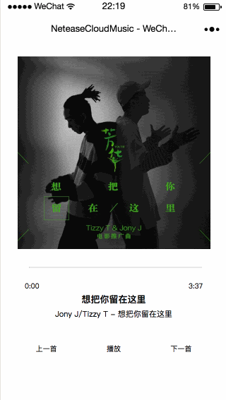
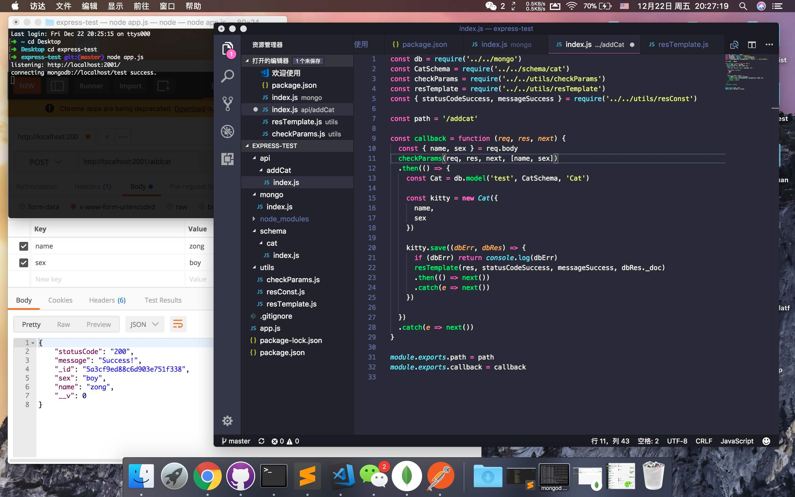

不算太晚的2017年年终总结
元旦3天我都在吃鸡 :)
先总结12月
《学习JavaScript数据结构与算法》 => 完成
《深入React技术栈》 => 进行中
购入《算法导论（原书第3版）》、《图解密码技术 第3版》以备储备知识
React
相比《React学习笔记（一）》，现在学习更轻松一些。
也实践使用React重写Vue-To Do List项目To Do List。
以下列出了我在学习过程中，认为很好的概念（谁用谁知道）：
- Virtual DOM
- 函数式编程
- React生命周期
- CSS Modules
- 高阶组件
微信小程序
zong-music
试着写了一个音乐播放器
后端数据由@Binaryify(阿发)网易云音乐 API提供，由于微信小程序发布线上版本需要使用HTTPS证书，但我服务器和域名是在不同云买的，那么我就没有发布线上版本了咯。
demo示例

类似在线音乐播放器、高德地图这类业务，我认为很适合理解异步操作，这时Promise对象和 async函数就是很好的解决方案。
但这个实践我还未实现歌曲下载时，通过下载进度来控制音乐播放的业务逻辑。
需要注意：
页面的脚本逻辑是在JsCore中运行，JsCore是一个没有窗口对象的环境，所以不能在脚本中使用window，也无法在脚本中操作组件
所以建议使用有对外暴露接口的js文件，而非一些涉及到window的第三方库。
我遇到的库就是jsencrypt，因为他源码当中并没有对外暴露接口，并且使用到了window，所以最终我使用WeixinApp_RSA_Signature代替。
另外值得一提
- 因12月遇到业务量爆炸，带宽瓶颈，所以前端加载优化很重要！很重要！很重要！
- 实践了RSA、AES加密方式，md5值比对。
- 体验Express，试着自己写了一个后端接口，express-test

回顾2017本命年
其实也不算总结，顶多算个回顾罢了，前面的文章看看么好了……
- 01月 浙商年会中了特等奖乐视65寸电视
- 04月 信用卡部部门踏青
- 05月 离开浙商银行，成为前端工程师；购入MacBook Pro
- 06月 《图解HTTP》，购入ATH-CKS1100iS
- 07月 《JavaScript语言精粹》
- 08月 《CSS SECRETS》
- 09月 《ECMAScript 6 标准入门》（第2版）
- 10月 《深入理解ES6》；日本旅游；参加云栖大会
- 11月 《ECMAScript 6 标准入门》（第3版）；参加 2017 饿了么大前端秋季交流会
- 12月 《学习JavaScript数据结构与算法》；参加D2前端技术论坛
2017年似乎比我想象的过的要快，要精彩，也要累。
但是2017年初的我和现在的我相比，对前端的认识和理解更进了一步。
正所谓，这段看不见的楼梯，似乎多了几阶我自己砌出来的台阶，踩上去是那么的踏实稳固。
2018/01/02
Zong
- 本文链接: https://zongzi531.com/2018/01/02/%E4%B8%8D%E7%AE%97%E5%A4%AA%E6%99%9A%E7%9A%842017%E5%B9%B4%E5%B9%B4%E7%BB%88%E6%80%BB%E7%BB%93/
- 版权声明: 本博客所有文章除特别声明外，均采用 CC BY-NC-SA 3.0 许可协议。转载请注明出处！